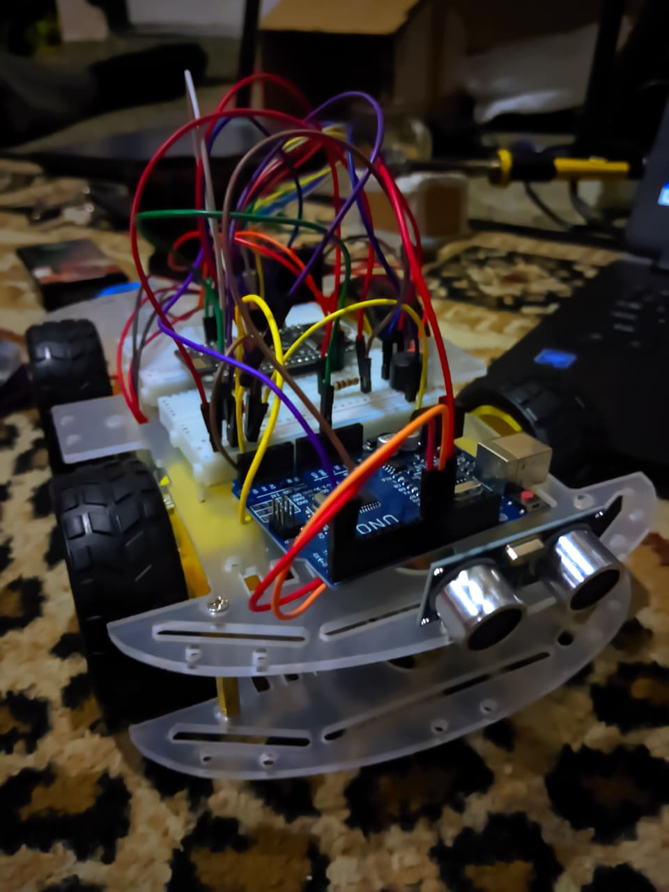
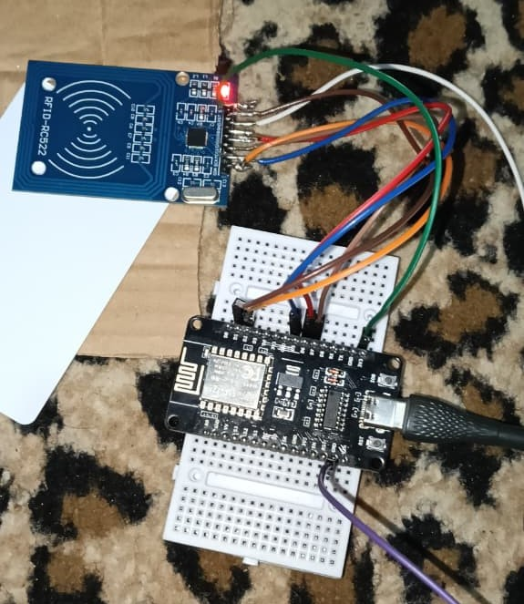
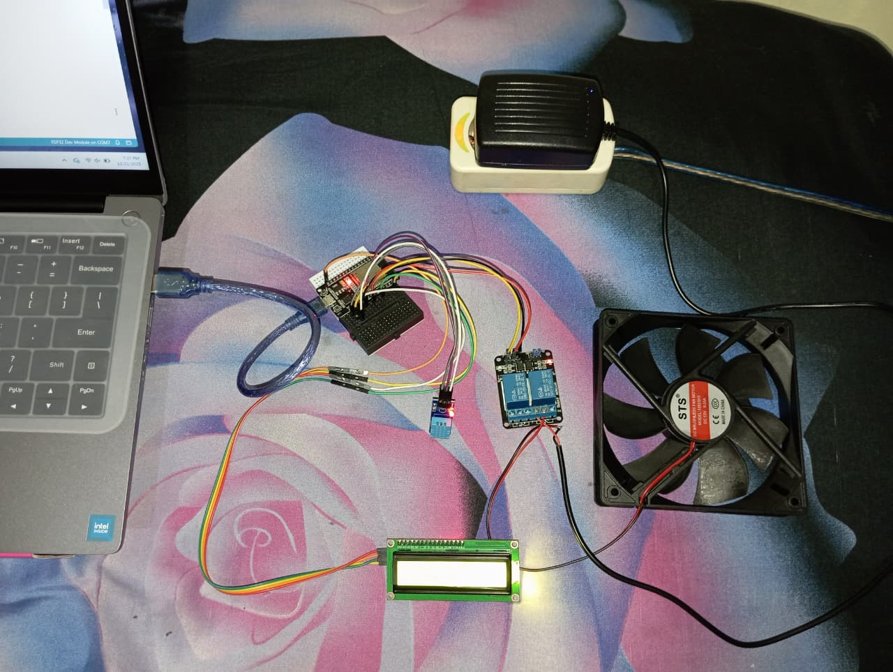

Tentang Saya
Halo! Saya adalah seorang Pengembang IoT Engineer yang memiliki passion dalam Merancang sebuah Project Internet Of Things yang menarik. Saya memiliki pengalaman dalam Pembuatan Project RC Car berbasis NodeMCU-ESP8266 dan Arduino Uno. Saat ini, saya sedang menempuh pendidikan di UNIVERSITAS KUNINGAN Teknik Informatika.
Proyek Saya
RC Car Berbasis NodeMCU-ESP8266 dan Sensor Objek Berbasis Arduino
Dalam proyek kali ini Sebuah Remote Control berbasis NodeMCU-ESP8266 yang di kendalikan melalui Wifi, fitur tersebut tersedia pada Mikrokontroller NodeMCU-ESP8266 karena membuat accsess point dan terhubung pada handphone melalui aplikasi ESP8266 WIFI RobotCar. dan saya menambahkan sensor Ultrasonik untuk mengetahui bila RC car mengenai objek diberitahu oleh sensor dan ditandai oleh suara Buzzer.
Lihat ProyekAbsensi Online menggunakan RFID via Googlesheet Berbasis NodeMCU-ESP8266
Di Project ini saya menerapkan absensi menggunakan RFID sekaligus melalui Googlesheet untuk menyimpan data keterangan Absensi
Lihat ProyekKipas Otomatis deteksi Suhu Berbasis ESP-32 Dev Kit
Dari project ini kita sering kali malas untuk menyalakan kipas disaat kondisi sedang bersantai tetapi ingin menyalakan kipas, lahirlah project Kipas angin Otomatis berbasis ESP-32 Dev Kit dengan sensor DHT11 untuk membaca suhu ruangan sekitar. Dimana jika kondisi suhu ruangan berada pada > 30 derajat, maka kipas akan berjalan otomatis, dan jika kondisi suhu ruangan berada pada < 30 derajat maka kipas off/mati.
Lihat ProyekHubungi Saya
- Email: candraghianaharin@gmail.com
- GitHub: candraghianaharin